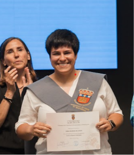

Hola, soy
Desarrolladora full stack y game developer, graduada en Diseño de Videojuegos por la UBU. Apasionada por construir productos reales — desde el backend hasta la experiencia de juego.
01 — Sobre mí
Soy Sara, desarrolladora de Segovia recién graduada en Diseño de Videojuegos por la Universidad de Burgos (2021–2026). Aunque el grado lo abarca todo, mi camino fue directo a la programación: me enganché a los sistemas, la lógica y ese momento en que el código hace algo real.
Tengo experiencia práctica en desarrollo full stack — actualmente en prácticas en Dealers League, donde construí la app MascotaRed en .NET MAUI con backend SQL Server. También desarrollo videojuegos en Unity y trabajo con clientes de forma independiente.
Certificada por Anthropic, Google e IE University en IA y ciencia de datos. Inglés B2 con C1 en curso. No me asusta el código difícil ni empezar desde cero — me gustan los problemas que requieren pensar.

02 — Skills
Herramientas usadas en proyectos reales durante el grado y por cuenta propia.
Lenguajes
Motores y Frameworks
IA y Datos
Diseño y Otros
03 — Proyectos
Proyectos académicos, profesionales y de game jam. Todo con código real.
App móvil de cuidado de mascotas en .NET MAUI con backend SQL Server. Web corporativa con arquitectura Full SSL/TLS. Diseño de ERD, flujos críticos y entrega de MVP funcional durante las prácticas en Dealers League.
Diseño y desarrollo completo de la web para una panificadora de Segovia. Identidad visual propia, tipografía personalizada y optimización para negocio local.
E-commerce de mascotas exóticas con catálogo de productos, carrito de compra, registro de usuarios y sistema de login. Proyecto frontend completo en HTML, CSS y JavaScript vanilla.
App de gimnasio tipo Basic Fit con login, perfil de usuario, creación de rutinas, seguimiento de progreso, temporizador y sistema de 12 insignias/logros. Frontend en React con backend propio y MongoDB.
Dungeon crawler 2D en Unity con sistema de IA que ajusta la dificultad en tiempo real según el comportamiento del jugador. Generación procedimental de mazmorras y ajuste dinámico de iluminación con URP 2D Light.
Juego de carreras en Unity desarrollado en equipo de 5 para la Insanity Jam (UBU). Ganador de la categoría INSANO. Rol principal como programadora del equipo.
RPG de acción y aventura en tercera persona en Unity 3D con C#. Programación completa del juego: mecánicas de combate, IA de enemigos y modelos 3D.
04 — Experiencia
Full Stack Developer Intern
Dealers League S.L. · Segovia
Freelance — Desarrollo Web y Videojuegos
Profesional Independiente
Profesora de Desarrollo y Diseño Web
Actividad independiente
Monitor & Árbitro Autonómico de Judo
Federación de Castilla y León de Judo · Valladolid
05 — Certificaciones
Anthropic
Claude Code in Action
Mar. 2026
IE University / Santander
Introducción a la Ciencia de Datos
Feb. 2026
Google / Santander
Domina la IA con Gemini
Ene. 2026
Santander Open Academy
Python
Ene. 2026
Udemy
PHP & MVC: Proyectos Web Desde Cero
Nov. 2023
Udemy
Unity 2D Plataformas — Avanzado
Nov. 2023
Udemy
Java Complete Course
Abr. 2023
06 — Contacto
Abierta a oportunidades laborales, colaboraciones o una buena conversación sobre código o videojuegos.